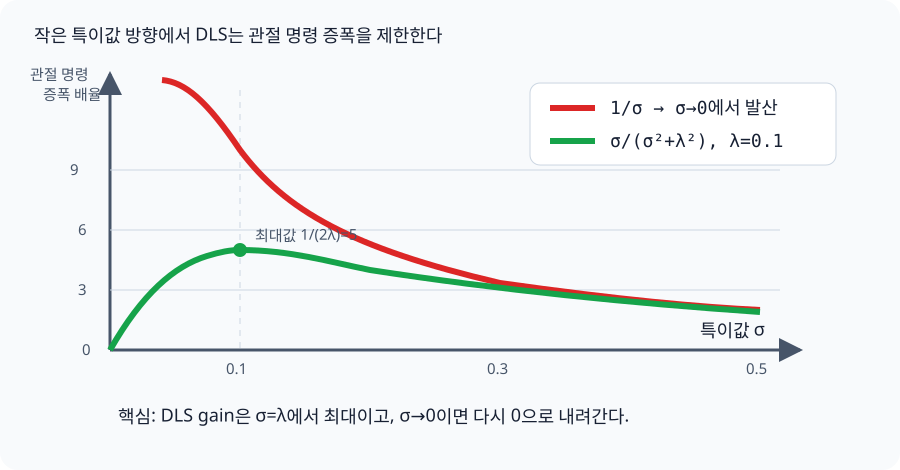

DLS와 위치 우선 IK 수학¶
이 페이지는 src/kinematics.py의 KinematicsSolver.solve_pose()를 읽을 때 가장
헷갈리기 쉬운 두 질문에 답한다.
- DLS는 왜 특이점 근처에서 관절 움직임이 폭발하지 않게 하는가?
- 자세 보정은 어떻게 이미 맞춘 손 위치를 거의 망치지 않고 더할 수 있는가?
설명은 7자유도 팔의 한 solver iteration을 기준으로 한다. 실제 클래스와 호출 흐름은 단일 팔 IK, Jacobian과 좌표계 정의는 기구학과 충돌 거리를 참고한다.
현재 텔레옵과 이 페이지의 관계
현재 텔레옵은 src/whole_body_ik.py의 bounded solver를
사용한다. 여기서 설명하는 반복 DLS는 단일 팔 회귀·오프라인 경로지만, FK와
Jacobian은 실시간 경로와 같은 KinematicTree 구현을 공유한다. src/ik.py는
기존 InverseKinematics 이름만 제공한다.
먼저 보는 전체 흐름¶
세부 수식보다 아래 네 단계를 먼저 기억하면 된다.
flowchart TD
ERROR["1. 목표-현재<br>손 오차 계산"] --> DLS["2. DLS<br>위치용 관절 변화 계산"]
DLS --> NULL["3. null-space<br>위치를 덜 건드리는 자세 보정"]
NULL --> SAFE["4. clamp + backtracking<br>실제 적용 크기 제한"]| 기호 | 크기 | 쉬운 의미 |
|---|---|---|
| \(q\) | \(7\times1\) | 현재 관절각 7개 |
| \(\Delta q\) | \(7\times1\) | 이번 iteration에 움직일 관절량 |
| \(p(q),\ p^\ast\) | 각각 \(3\times1\) | 현재 손 위치와 목표 손 위치 |
| \(e_p=p^\ast-p(q)\) | \(3\times1\) | 손이 더 움직여야 할 거리와 방향 |
| \(J_p\) | \(3\times7\) | 관절 변화가 손 위치 변화로 바뀌는 비율 |
| \(J_R\) | \(3\times7\) | 관절 변화가 손 자세 변화로 바뀌는 비율 |
| \(\lambda\) | 스칼라 | 큰 관절 움직임을 얼마나 강하게 억제할지 정하는 damping |
처음 읽는다면
먼저 1절의 문제, 4절의 그래프, 6절의 컵 비유와 마지막 요약을 읽으면 큰 흐름을 잡을 수 있다. 그다음 2절부터 순서대로 읽으면 각 등식이 어디서 나왔는지 중간 단계를 건너뛰지 않고 확인할 수 있다.
1. IK가 푸는 문제¶
7개 관절각을 벡터 \(q\in\mathbb R^7\), 손의 현재 위치를 \(p(q)\in\mathbb R^3\), 목표 위치를 \(p^\ast\)라고 하자. 위치 오차는 다음과 같다.
관절을 작은 양 \(\Delta q\)만큼 움직였을 때 손 위치 변화는 position Jacobian \(J_p\in\mathbb R^{3\times7}\)으로 선형 근사한다.
따라서 한 iteration의 목표는 다음 식을 가능한 한 잘 만족하는 \(\Delta q\)를 찾는 것이다.
flowchart LR
DQ["관절 변화 Δq<br>7개 숫자"] --> J["position Jacobian Jp<br>현재 자세에서의 변화율"]
J --> DP["예측 손 이동 JpΔq<br>3개 숫자"]
EP["원하는 손 이동 e_p"] --> COMPARE{"두 값의 차이를<br>작게 만들기"}
DP --> COMPARE왜 해가 여러 개인가¶
\(J_p\)는 식 3개에 미지수 7개인 \(3\times7\) 행렬이다. 일반적인 자세에서 \(\operatorname{rank}(J_p)\approx3\)이면 위치를 움직이지 않는 관절 방향이 대략 4차원 남는다.
\(J_pz=0\)인 관절 벡터 \(z\)는 1차 근사에서 손 위치를 바꾸지 않는다. 손을 한 점에 둔 채 팔꿈치 자세를 바꾸는 움직임이 이 null space(영공간)의 직관적인 예다.
2. DLS는 무엇을 최소화하는가¶
Damped least-squares(DLS)는 위치 오차만 줄이는 대신 관절 변화량에도 벌점을 준다.
| 항 | 의미 |
|---|---|
| \(\lVert J_p\Delta q-e_p\rVert^2\) | 예측한 손 이동이 원하는 이동과 얼마나 다른가 |
| \(\lambda^2\lVert\Delta q\rVert^2\) | 관절을 얼마나 과격하게 움직이는가 |
\(\lambda\)가 커지면 작은 관절 움직임을 더 선호해 안정적이지만 느려지고, 작아지면 목표를 적극적으로 쫓지만 특이점 근처에서 민감해진다.
이 식을 말로 읽으면
손 오차는 줄이되, 그 대가로 관절을 너무 크게 움직여야 한다면 조금 양보한다. DLS의 핵심은 정확한 오차 0만 고집하지 않고 안정적인 관절 움직임과 절충하는 것이다.
2.1 목적함수 완전 전개¶
아래에서는 표기를 짧게 하기 위해 \(J_p\)를 \(J\), \(e_p\)를 \(e\)로 쓴다. 제곱 노름의 정의부터 시작한다.
첫 번째 곱을 네 항으로 전개한다.
\(\Delta q^TJ^Te\)는 스칼라이므로 전치해도 값이 같다.
따라서 가운데 두 항을 합칠 수 있다.
2.2 미분에서 normal equation까지¶
필요한 미분 규칙은 세 가지다. \(A=A^T\)이고 \(b\)가 상수일 때
여기서 \(J^TJ\)는 대칭행렬이고 \(e^Te\)는 \(\Delta q\)와 무관한 상수다. 각 항을 하나씩 미분하면
이들을 더한 gradient를 0으로 둔다.
양변을 2로 나누고 \(\Delta q\)가 들어간 항을 묶으면
\(\lambda>0\)이면 \(J^TJ+\lambda^2I\)는 positive definite라 역행렬이 존재한다. 따라서 관절 공간에서 푸는 primal form은
이다.
2.3 Primal form에서 코드의 dual form까지¶
관절이 \(n\)개이고 task가 \(m\)차원이면 primal form은 \(n\times n\) system을 푼다. 이 프로젝트의 위치 IK는 \(n=7\), \(m=3\)이므로 \(3\times3\) system을 푸는 dual form이 더 작다. 두 형태가 같은 이유를 등식으로 확인한다.
왼쪽에서 \((J^TJ+\lambda^2I_n)^{-1}\), 오른쪽에서 \((JJ^T+\lambda^2I_m)^{-1}\)를 차례로 곱한다.
두 번째 등식의 좌우를 바꾸고 primal form에 대입하면
따라서 실제 solver가 사용하는 결과식은
이다. 여기까지가 목적함수에서 코드의 DLS 식까지 생략 없는 전개다.
3. 수식과 코드의 대응¶
KinematicsSolver.solve_pose()는 위 식을 다음 코드로 직접 구현한다. 별도 helper로
감싸지 않아 수식의 각 항이 iteration 안에서 그대로 보인다.
damping_squared = self.damping ** 2
position_system = (
position_jacobian @ position_jacobian.T
+ damping_squared * np.eye(3)
)
position_delta = position_jacobian.T @ np.linalg.solve(
position_system, position_error
)
| 코드 | 수식 | 역할 |
|---|---|---|
position_jacobian @ position_jacobian.T |
\(J_pJ_p^T\) | task-space sensitivity를 모은다. |
+ damping_squared * I |
\(J_pJ_p^T+\lambda^2I\) | 0에 가까운 방향의 분모를 안정화한다. |
solve(position_system, position_error) |
\((J_pJ_p^T+\lambda^2I)^{-1}e_p\) | 역행렬을 만들지 않고 선형계를 푼다. |
position_jacobian.T @ ... |
\(J_p^T(\cdots)\) | 결과를 관절 공간으로 돌려보낸다. |
기본 감쇠는 DEFAULT_DAMPING = 0.05, iteration당 관절 변화 제한은
DEFAULT_MAX_JOINT_DELTA = 0.05 rad다. 두 값은 역할이 다르다. damping은 해를
계산하는 과정의 정규화이고, clamp는 계산된 해에 마지막으로 적용하는 상한이다.
4. DLS가 특이점에서 폭발을 막는 이유¶
Jacobian을 singular value decomposition(SVD)으로 쓰면 \(J=U\Sigma V^T\)다. 각 특이값 \(\sigma_i\)는 해당 task 방향으로 관절 움직임이 얼마나 잘 전달되는지를 나타낸다.
4.1 순수 pseudoinverse의 방향별 gain¶
SVD에서 pseudoinverse는 \(J^+=V\Sigma^+U^T\)이고, \(\Sigma^+\)의 대각 원소는 0이 아닌 각 특이값의 역수다.
오차를 왼쪽 singular vector \(u_i\) 방향 성분으로 나눠 쓰면
이고, pseudoinverse 해는 다음 순서로 전개된다.
따라서 \(u_i\) 방향의 task error는 관절 공간에서 정확히 \(1/\sigma_i\)배 된다.
4.2 DLS gain을 SVD에서 끝까지 전개¶
DLS 식에 \(J=U\Sigma V^T\)를 대입한다. 먼저 \(JJ^T\)를 계산하면
이다. \(U\)가 orthogonal이므로 \(I=UIU^T\)이고
이다. Orthogonal similarity transform의 역은
이므로 DLS operator를 전개하면
대각 원소끼리 계산하면
이므로 최종 해는
이다. 따라서 DLS의 방향별 gain은
로 정확히 나타난다.
4.3 DLS gain의 최대값과 극한¶
gain을 \(\sigma\)로 미분한다. 몫의 미분법을 그대로 적용하면
\(\sigma\ge0\)에서 \(g'(\sigma)=0\)이면
이고, 그때의 gain은
이다. 양 끝의 극한도 직접 계산할 수 있다.
| 특이값 상태 | 뜻 | 순수 pseudoinverse | DLS |
|---|---|---|---|
| \(\sigma_i\)가 큼 | 손이 잘 움직이는 방향 | 평범한 크기의 명령 | 거의 같은 방향으로 움직임 |
| \(\sigma_i\approx\lambda\) | 민감도가 낮아지기 시작 | 명령이 커짐 | gain이 최대값에 도달 |
| \(\sigma_i\to0\) | 사실상 움직일 수 없는 방향 | \(1/\sigma_i\)가 폭발 | gain이 0으로 내려가 방향을 포기 |
순수 역은 \(\sigma_i\to0\)일 때 무한대로 커지지만 DLS는 위 전개처럼 0으로 내려간다. 즉 로봇이 거의 움직일 수 없는 방향을 억지로 만들기 위해 관절을 크게 휘두르지 않는다.

예를 들어 \(\sigma=0.001\), \(\lambda=0.1\)이면 다음과 같다.
같은 아주 작은 손 오차가 순수 pseudoinverse에서는 관절 공간에서 크게 증폭되지만, DLS에서는 해당 특이 방향이 강하게 억제된다.
그래프의 한 줄 결론
움직일 수 없는 방향일수록 더 세게 명령하는 것이 아니라, 그 방향의 명령을 포기하는 것이 DLS가 특이점에서 안전한 이유다.
5. 왜 위치와 자세를 한 번에 풀지 않는가¶
가장 단순한 pose IK는 위치와 자세 오차, Jacobian을 각각 세로로 쌓는다.
하지만 하나의 least-squares 문제에서는 위치와 자세가 같은 단계에서 경쟁한다. 가중치 \(w_p\gg w_R\)를 주어도 “위치를 절대 보존하라”가 아니라 “위치를 더 비싸게 취급하라”는 절충일 뿐이다.
이 solver는 위치를 먼저 풀고, 자세는 위치 task가 쓰지 않는 관절 방향으로만 보정하는 task-priority 구조를 사용한다.
책상 위 컵으로 생각하기
먼저 컵을 목표 지점으로 옮기는 동작이 위치 보정 \(\Delta q_{pos}\)다. 그다음 컵을 제자리에서 돌리고 싶다. 자세 보정이 컵을 옆으로 밀면 방금 맞춘 위치가 깨진다. Null-space projection은 자세 보정에서 컵을 미는 성분을 빼고, 제자리 회전에 해당하는 성분만 남기는 필터라고 생각할 수 있다.
자세 보정이 위치에 영향을 주지 않으려면 이상적으로 다음을 만족해야 한다.
6. Null-space projector¶
Moore–Penrose pseudoinverse \(J_p^+\)를 사용한 정확한 projector는 다음과 같다.
projector가 임의의 후보 관절 방향 \(z\)를 처리하는 순서는 다음과 같다.
- \(J_pz\): 후보 \(z\)가 손 위치를 얼마나 움직이는지 계산한다.
- \(J_p^+(J_pz)\): 그 움직임을 만드는 관절 성분을 다시 구한다.
- 원래 후보에서 그 성분을 빼 위치 변화가 없는 쪽만 남긴다.
임의의 관절 방향 \(z\)에 \(N_p\)를 곱하면 위치를 움직이는 성분이 제거된다. 이를 projector 정의에서 직접 확인하면
이다. Moore–Penrose pseudoinverse의 정의 성질 중 하나가
이므로 이를 바로 대입하면
을 얻는다. 따라서 모든 \(z\)에 대해 \(J_p(N_pz)=(J_pN_p)z=0\)이다.
자세 오차 \(e_R\in\mathbb R^3\)와 rotational Jacobian \(J_R\in\mathbb R^{3\times7}\)에서 자세를 개선하는 단순 관절 방향은 \(g_R=J_R^Te_R\)다. 이 방향도 목적함수의 gradient에서 나온다. 작은 관절 변화 \(\delta q\)에 대한 orientation 비용을
라고 하면
이다. 현재점 \(\delta q=0\)에서 비용을 줄이는 negative-gradient 방향은
가 된다. 이를 위치 null space에 투영하면 다음과 같다.
일반식의 \(\alpha\)는 자세 보정 gain이다. 현재 src/ik.py는 별도 gain을 곱하지 않아
사실상 \(\alpha=1\)이다. ori_weight=0.3은 line search의 후보 비용을 비교할 때만
사용하며 orientation gradient gain이 아니다.
중요한 주의점: damped projector는 근사다¶
실제 코드는 안정성을 위해 정확한 \(J_p^+\) 대신 damped pseudoinverse를 재사용한다.
이 경우 \(J_pN_{p,\lambda}=0\)이 엄밀하게 성립하지 않는다. 따라서 문서와 코드를 해석할 때는 “자세 보정이 위치를 전혀 움직이지 않는다”가 아니라 “자세 보정이 위치에 미치는 1차 영향을 크게 억제한다”가 정확하다.
얼마나 남는지도 생략 없이 계산할 수 있다. 정의를 대입하면
\(A=J_pJ_p^T\)라고 놓고 \(J_p\)를 오른쪽으로 묶으면
이다. 다시 \(A=J_pJ_p^T\)를 대입하면 정확한 잔차는
다. SVD 방향 \(i\)에서 이 잔차의 gain은
이므로 \(\lambda>0\)에서는 일반적으로 0이 아니다. 이것이 damped projector가 정확한 null-space projector가 아니라는 수학적 이유다.
다음 상황에서는 작은 위치 변화가 남을 수 있다.
- damping \(\lambda\)가 큰 경우
- singularity 또는 joint limit 근처
- 관절 변화량 clamp가 성분별로 걸린 경우
- 한 iteration의 변화가 커서 Jacobian 선형근사가 부정확한 경우
7. 실제 solver의 한 iteration¶
현재 구현의 핵심 계산은 다음 식으로 요약된다.
먼저 damped projector에 \(g_R\)를 대입해 orientation 보정식을 전개하면
이다. 반복해서 나타나는 system을 \(A=J_pJ_p^T+\lambda^2I\)로 줄여 쓰면
| 계산 조각 | 말로 읽기 |
|---|---|
| \(A=J_pJ_p^T+\lambda^2I\) | 위치 Jacobian에 damping을 더한 공통 system |
| \(J_p^TA^{-1}e_p\) | 위치 오차를 안정적인 관절 변화로 변환 |
| \(g_R=J_R^Te_R\) | 자세 오차를 줄이고 싶은 관절 방향 생성 |
| \(g_R-J_p^TA^{-1}(J_pg_R)\) | 자세 방향에서 위치를 움직이는 성분 제거 |
| \(\operatorname{clip}(\cdot)\) | 각 관절의 한 iteration 최대 이동량 제한 |
수식의 \(A^{-1}x\)는 개념 표기다. 코드는 역행렬을 직접 만들지 않고
np.linalg.solve(A, x)로 선형계를 푼다.
flowchart TD
POS["위치 오차 e_p"] --> DLS["DLS로 Δq_pos 계산"]
ORI["자세 오차 e_R"] --> GRAD["J_Rᵀe_R로 자세 방향 g_R 계산"]
JP["position Jacobian J_p"] --> PROJECT["damped null-space projection"]
GRAD --> PROJECT
PROJECT --> DQORI["위치 영향을 억제한 Δq_ori"]
DLS --> SUM["Δq_pos + Δq_ori"]
DQORI --> SUM
SUM --> CLAMP["관절별 max_joint_delta clamp"]
CLAMP --> SEARCH["step=1, 1/2, … 후보 비용 비교"]
SEARCH --> UPDATE["가장 나은 후보 q로 갱신"]clamp 뒤에는 backtracking으로 step을 최대 6번 절반씩 줄이며 실제 forward kinematics 비용을 비교한다.
비용이 현재보다 낮은 후보를 찾으면 탐색을 멈춘다. 여섯 후보가 모두 개선되지 않으면 구현은 그중 비용이 가장 작은 후보를 채택한다. 따라서 line search는 큰 비선형 step의 위험을 줄이지만, 모든 iteration의 단조 감소를 수학적으로 보장하는 구조는 아니다.
8. 2관절로 보는 null space¶
위치 task가 하나이고 Jacobian이 다음과 같다고 하자.
관절을 반대 방향으로 같은 양만큼 움직이는 벡터는 null space에 있다.
이 예제의 pseudoinverse와 projector도 끝까지 계산해보자.
따라서
이다. 임의의 후보 \(c=[1,0]^T\)를 투영하면
이고 실제 위치 변화는
이다.
즉 첫 관절을 \(+1\), 둘째 관절을 \(-1\) 움직이면 이 단순 모델에서 손 위치는 그대로다. 자세를 개선하는 관절 방향 중 이 성분만 남기는 것이 null-space projection이다.
7자유도 팔은 위치 3자유도를 맞춘 뒤 일반적으로 약 4자유도가 남는다. 위치와 자세 6자유도를 모두 맞추고 나면 약 1자유도의 redundancy가 남지만, 특이 자세나 관절 한계에서는 \(\operatorname{rank}(J_RN_p)<3\)이 되어 자세를 완전히 맞추지 못할 수 있다. 이는 버그가 아니라 위치 우선순위를 지킨 결과일 수 있다.
9. 현재 방식과 더 엄밀한 계층형 DLS¶
현재 구현은 계산이 단순한 gradient projection method다.
| 장점 | 한계 |
|---|---|
| 계산량이 작고 구현 의도가 분명하다. | 자세 오차를 가장 빨리 줄이는 해는 아닐 수 있다. |
| 위치 우선의 부가 task를 쉽게 넣을 수 있다. | damped projector라 위치 보존은 근사적이다. |
| 특이점에서 안정적인 DLS를 재사용한다. | null space가 부족하면 자세 보정이 거의 사라질 수 있다. |
더 엄밀한 계층형 식의 전개¶
더 엄밀한 방법은 위치 해가 자세에 이미 미친 영향까지 뺀 뒤, 남은 자세 오차를 위치 null space 안에서 다시 푼다. 먼저 primary 위치 해를
로 둔다. 위치를 보존하는 추가 움직임은 어떤 벡터 \(y\)에 대해
로 쓸 수 있다. 최종 관절 변화는
다. 이를 orientation의 선형 근사 \(J_R\Delta q\approx e_R\)에 대입하면
가 된다. 마지막 식에서 \(y\)의 최소 노름 해는
다. 이를 \(\Delta q=\Delta q_p+N_py\)에 다시 대입하면
이므로 최종식은
이다. 순서는 “위치를 먼저 풂 → 그 해가 자세에 준 영향 \(J_R\Delta q_p\)를 뺌 → 남은 자세 오차를 위치 null space 안에서 다시 풂”이다. 우선순위는 더 명확하지만 projector와 두 번째 pseudoinverse의 damping, rank 변화, joint limit를 함께 설계해야 하므로 구현 복잡도가 커진다.
핵심만 다시 보기¶
- DLS는 오차와 관절 변화량을 함께 최소화한다.
- 특이값이 0에 가까운 방향의 gain을 유한하게 만들어 관절 폭주를 억제한다.
- 위치를 먼저 풀고 자세 방향을 위치 null space에 투영한다.
- damped projector의 위치 보존은 정확한 등식이 아니라 근사다.
- clamp와 backtracking은 damping과 별개의 추가 안전층이다.
다음으로 단일 팔 IK 구현에서 이 식이 함수와 제어 흐름에 어떻게 대응하는지 확인할 수 있다.